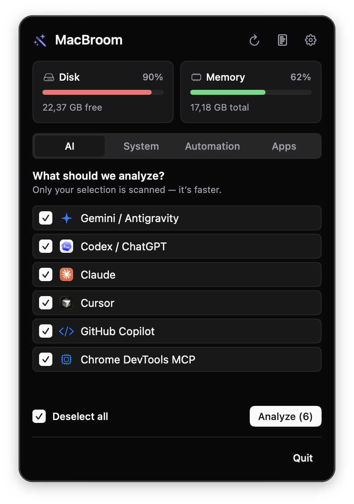
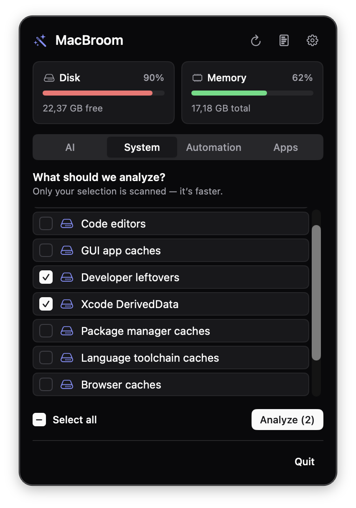
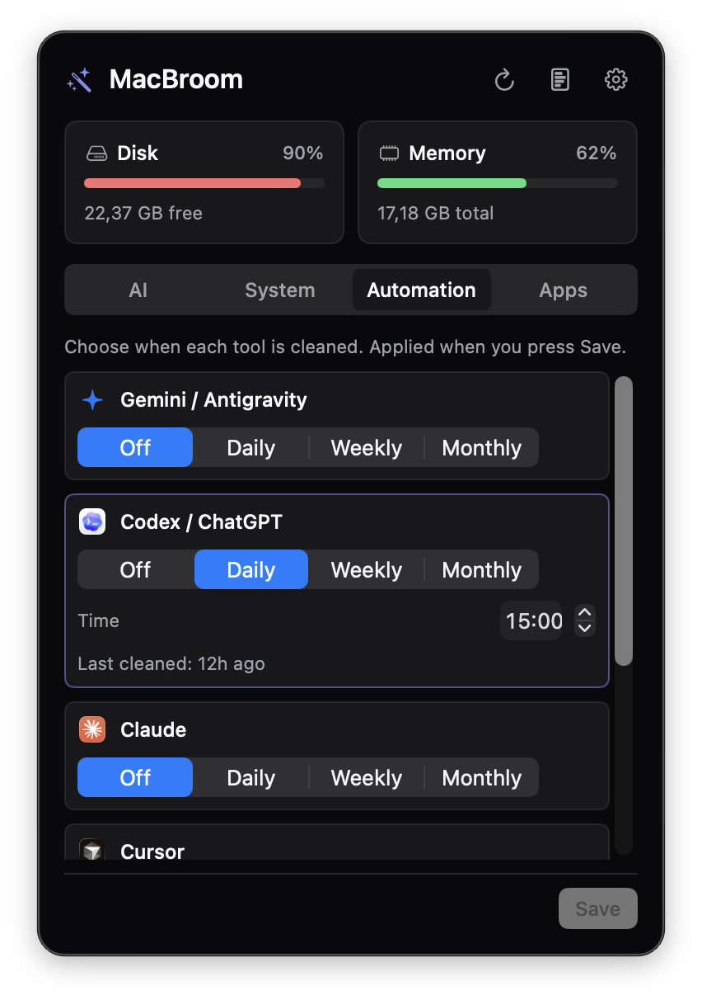
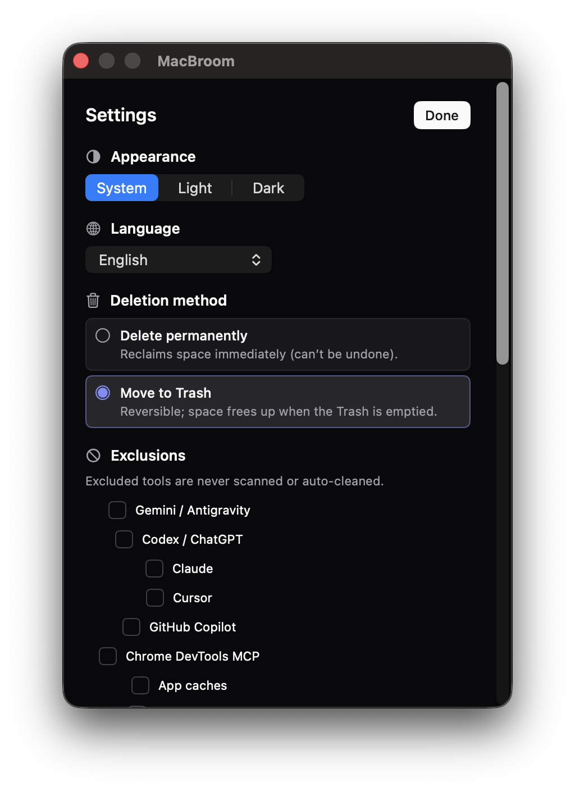

Shrink AI tool caches, keep your work
Clear regenerable cache from the tools you use every day. Their auth, sessions, memory and history are left alone.
- Codex
- Claude
- Gemini
- Cursor
- GitHub Copilot
- Chrome DevTools MCP
MacBroom is a free, open source cleaner for your Mac menu bar. It finds the cache that Codex, Claude, Gemini and Cursor leave behind, shows you every file, and deletes only what you confirm.
Free. macOS 13 or later. Apple Silicon and Intel.


Your AI tools leave a trail of cache behind them. MacBroom sweeps up the cache and leaves your sessions, memory and logins exactly where they were.
Hidden folders like ~/.codex and ~/.claude hold cache and your history side by side. One wrong delete costs you more than the space you got back.
Six AI tools, a long list of developer caches, and a schedule you can set once.
Clear regenerable cache from the tools you use every day. Their auth, sessions, memory and history are left alone.
Build output and downloads pile up quietly. MacBroom scans for them by category so you pick only what you want.
Path, size, reason and category for each candidate. You approve the list, not a guess.
Hourly, daily, weekly or monthly, per tool. A banner appears when a run frees at least 100 MB.
Uninstall an app together with the files it scattered across your Library.
Click the broom in your menu bar. There is no window to hunt for and no terminal to open.
01
Tick the AI tools or system caches you care about. Only your selection is scanned, which keeps it quick.
02
Each file lists its path, size and the reason it is there. Nothing has been deleted at this point.
03
Approve the list and MacBroom removes exactly that, through the same protected delete path mole uses.
The first time you analyze, MacBroom asks once for Full Disk Access instead of raising a dialog per folder. Grant it for a complete scan, or continue with a limited scan that skips protected folders.
Built in SwiftUI for the menu bar, with the same materials and symbols as the rest of macOS.


This is the default behavior, straight from the safety model. Options that touch state are off until you turn them on and confirm separately.
~/.codex
~/.claude and Application Support/Claude
~/.gemini
Application Support/Cursor
Every scan is read only. Deletion needs its own confirmation step.
System folders and costly to rebuild data are rejected, and paths with .. never pass.
If an AI tool is open, MacBroom leaves it alone and tells you.
No network connection and no telemetry. Deletion history stays on your Mac.
No. Auth, sessions, memory and history are protected by default, and only regenerable cache is listed. Advanced options that include state are switched off, need a separate confirmation, and state the risk plainly.
No. Every cleanup begins as a read only scan that lists each file with its path, size and reason. Files go only after you confirm. The one exception is scheduled automation, which you turn on yourself for each tool and which follows the same protected path rules.
Releases are not notarized yet, so Gatekeeper blocks the downloaded DMG even though the app is fine. Install with Homebrew, which clears the flag for you, or run this once: xattr -d com.apple.quarantine /Applications/MacBroom.app
It asks once, the first time you analyze. Grant it for a complete scan and MacBroom picks it up without a relaunch. Or continue with a limited scan that skips protected folders, so no further dialogs appear.
No. The app runs entirely on your Mac with no network connection and no telemetry. Read the privacy notice for the details, including what this website loads.
macOS 13 Ventura or later, on both Apple Silicon and Intel.
In the menu bar at the top right of your screen. MacBroom has no Dock icon, so click its icon there to open the panel.
Yes. MacBroom is open source under GPL 3.0 or later because it builds on mole's GPL licensed modules. You can read, build and change the code on GitHub.
It is the same engine and the same protected delete path. MacBroom adds a preview screen, selection by category, scheduled cleaning, notifications and an app uninstaller, so you never need the command line.
Free. macOS 13 or later. Apple Silicon and Intel.
Prefer Homebrew? This also clears the quarantine flag.
brew install --cask afatihyavasi/tap/macbroom
Downloaded the DMG and macOS says it is "damaged"? Releases are not notarized yet. Clear the quarantine flag once:
xattr -d com.apple.quarantine /Applications/MacBroom.app